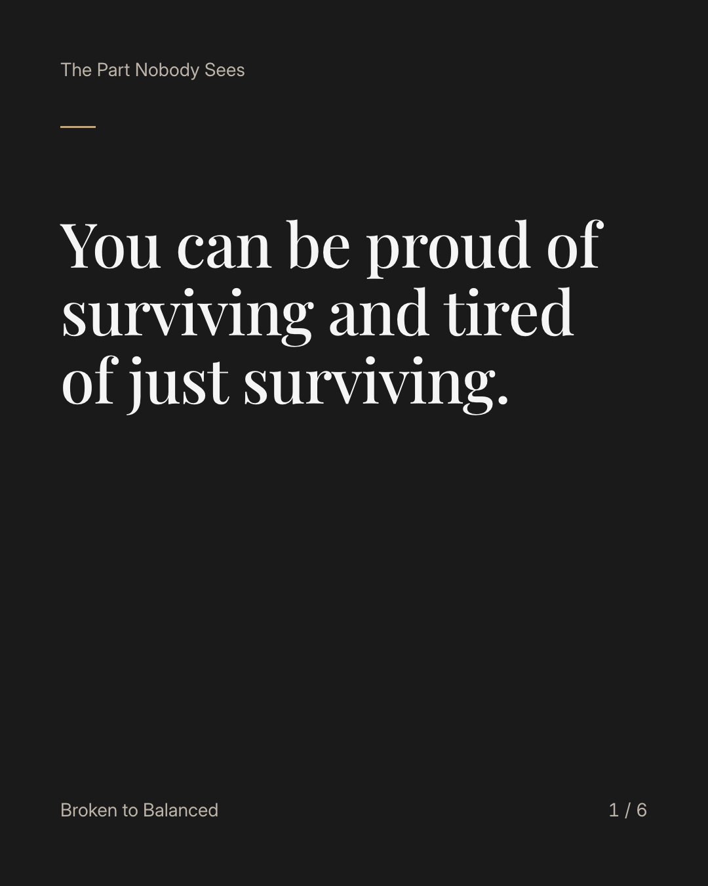
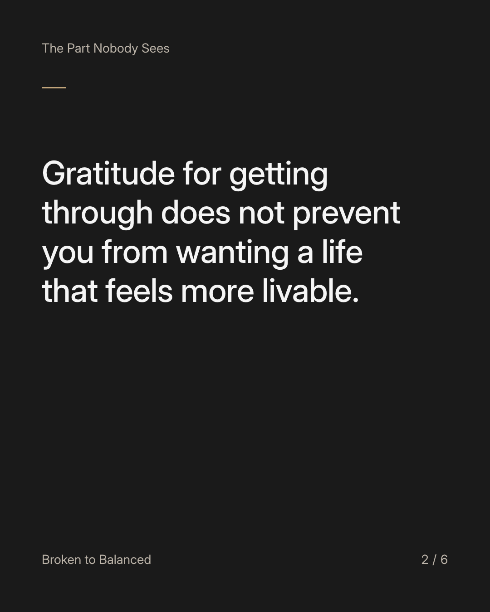
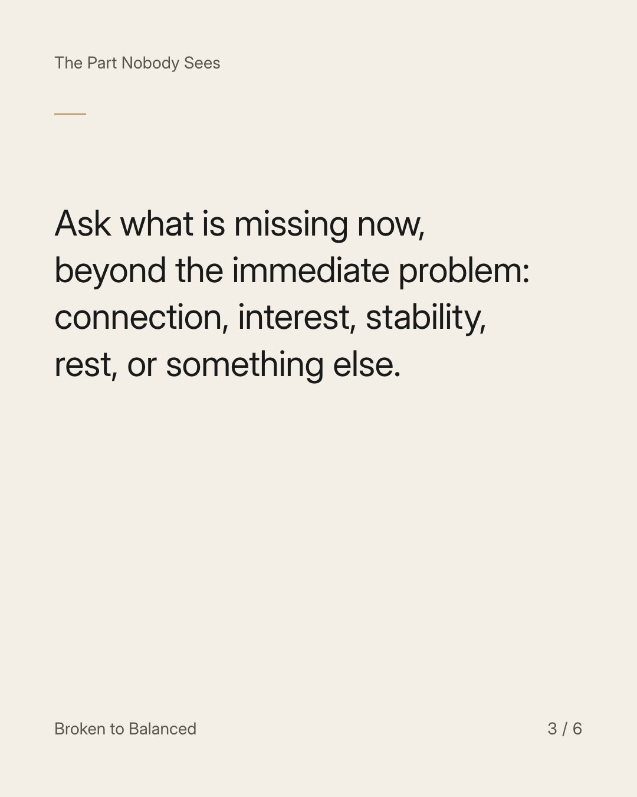
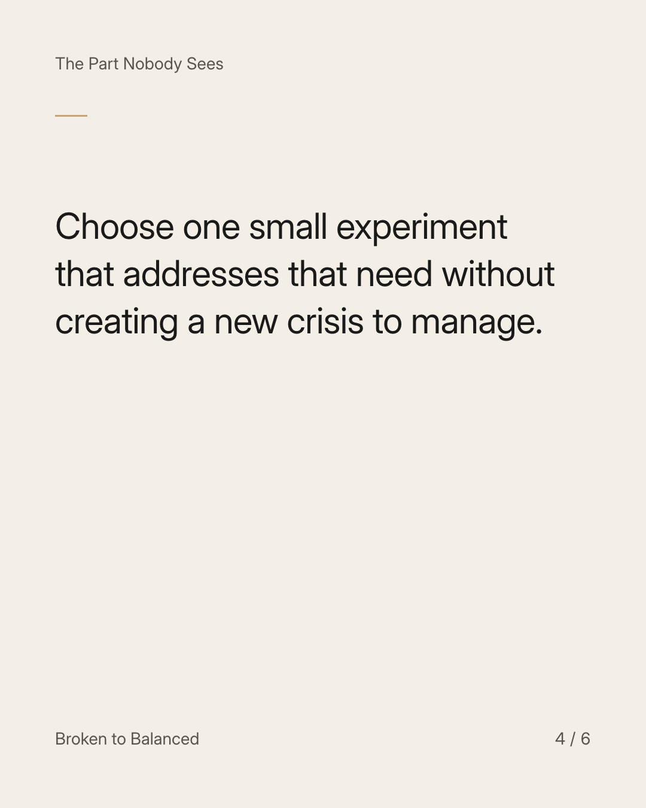
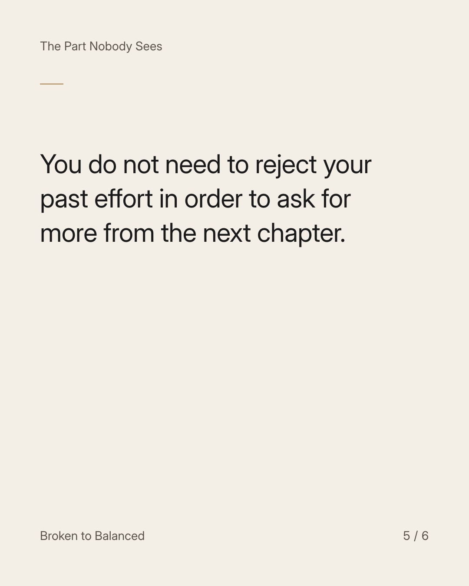
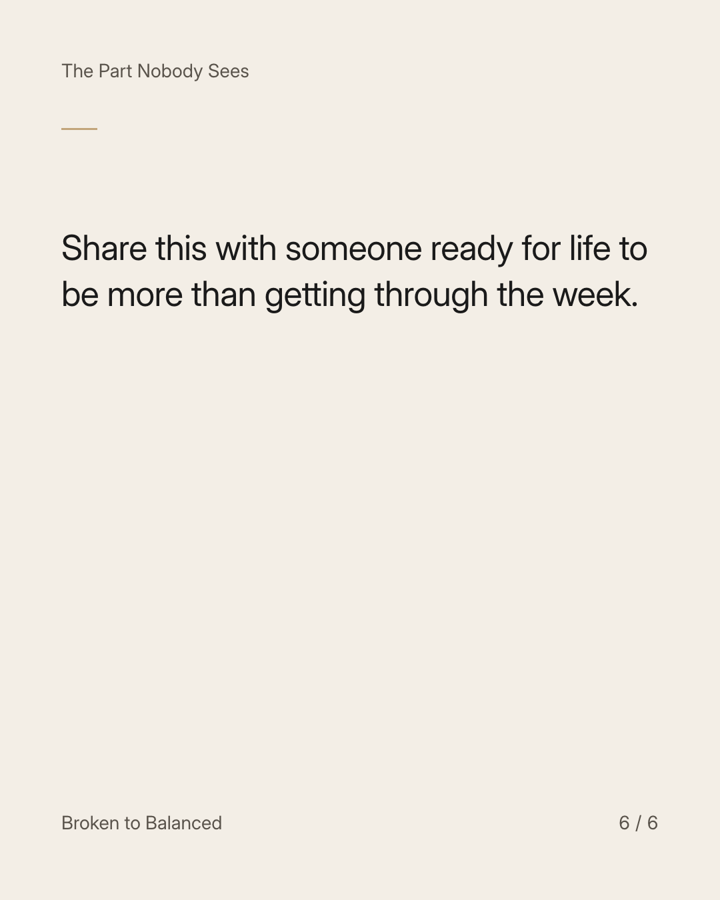

Exact text and accessibility text
You can be proud of surviving and tired of just surviving.
Slide 1 of 6. You can be proud of surviving and tired of just surviving.


Exact text and accessibility text
Gratitude for getting through does not prevent you from wanting a life that feels more livable.
Slide 2 of 6. Gratitude for getting through does not prevent you from wanting a life that feels more livable.


Exact text and accessibility text
Ask what is missing now, beyond the immediate problem: connection, interest, stability, rest, or something else.
Slide 3 of 6. Ask what is missing now, beyond the immediate problem: connection, interest, stability, rest, or something else.


Exact text and accessibility text
Choose one small experiment that addresses that need without creating a new crisis to manage.
Slide 4 of 6. Choose one small experiment that addresses that need without creating a new crisis to manage.


Exact text and accessibility text
You do not need to reject your past effort in order to ask for more from the next chapter.
Slide 5 of 6. You do not need to reject your past effort in order to ask for more from the next chapter.


Exact text and accessibility text
Share this with someone ready for life to be more than getting through the week.
Slide 6 of 6. Share this with someone ready for life to be more than getting through the week.
Exact caption
Plain-text fallback: select and copy the caption.